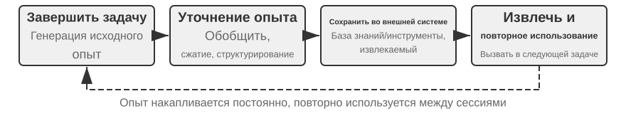
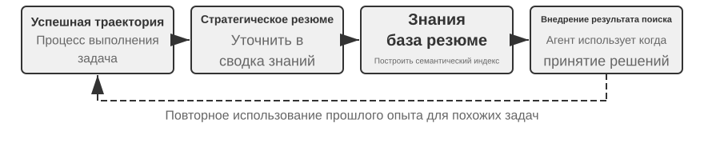
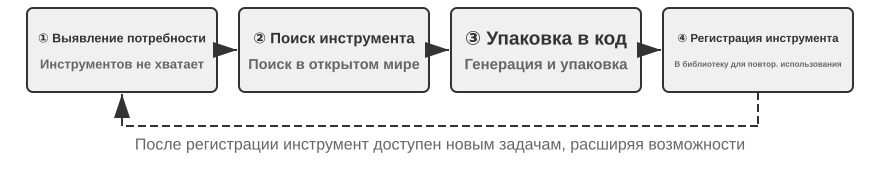
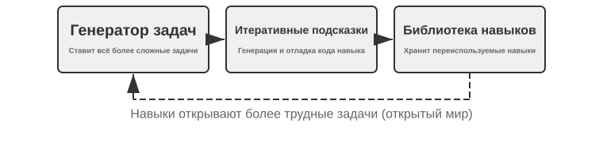
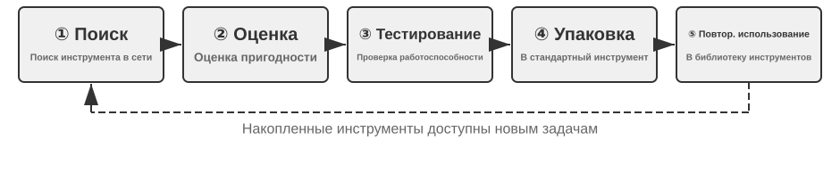

Непрерывная эволюция агентов¶
Современные Agent сталкиваются с ярко выраженным парадоксом возможностей: они способны без примеров решать ранее не встречавшиеся сложные задачи, но даже после десяти тысяч сходных задач на следующий день могут повторить ошибку первого дня. Способность автономно учиться на опыте становится ключевым условием перехода Agent от «умения выполнять задачи» к «способности надёжно работать», а также центральной темой исследований моделей следующего поколения. Однако возможности современных моделей в области непрерывного обучения всё ещё крайне ограничены.
Причина состоит в том, что после развёртывания модель не изменяет свои параметры автоматически по итогам отдельного вывода. Рассмотренные во второй главе контекстное обучение, поддержание состояния и сжатие позволяют Agent адаптироваться в пределах текущей задачи; однако после завершения контекста эти изменения естественным образом не переносятся в следующую задачу. Сохранение диалога в памяти также не означает освоения нового поведения: исходная траектория может быть длинной и содержать как эффективные стратегии, так и случайные успехи, ошибочную атрибуцию причин и недостоверный ввод.
Здесь важно различать два понятия, которые легко спутать: сохранение опыта не равнозначно обучению на опыте. Если поместить сто траекторий в длинный контекст или векторную базу, модель сможет при необходимости найти отдельный пример, но это само по себе не обеспечит сопоставление разных случаев: какие шаги многократно встречаются в успешных траекториях, какие приёмы работают только со старой версией интерфейса и обусловлен ли конкретный успех правильной стратегией или случайностью среды. Обучение происходит после того, как система активно выполнила «оценку, сопоставление, обобщение и проверку», а не в момент записи журнала на диск. Пользовательская память из третьей главы главным образом закрепляет сведения о том, «каковы пользователь и мир»; обучение на опыте в этой главе должно также закрепить, «как следует действовать при определённых условиях». Первое помогает Agent больше помнить, а второе превращает его из просто умного в опытного исполнителя.
Почему же не позволить модели обучать себя непосредственно после каждой задачи? Потому что производственная среда редко предоставляет чистые обучающие сигналы. Удовлетворённость пользователя не означает соблюдения требований, а прохождение тестов может быть следствием удаления неуспешных тестовых случаев. Даже локальное обновление способно вызвать забывание навыков, дрейф стратегии или ухудшение безопасности. Если разрешить работающей модели напрямую изменять себя на основе непроверенной обратной связи, ошибочный опыт и Prompt-инъекции могут закрепиться и последовательно усиливаться в дальнейших задачах. Периодическое обучение базовой модели способно повышать общие возможности, но не позволяет своевременно усваивать частные правила, изменения инструментов и локальный опыт, с которыми каждый Agent сталкивается ежедневно.
Поэтому, пока сама модель не способна надёжно осуществлять непрерывное обучение, «обучение» необходимо сначала оформить как автономную внешнюю систему: фиксировать свидетельства выполнения, проверять результат и процесс, извлекать общие закономерности из множества траекторий, а затем решать, что следует обновить — знания, инструкции, программы или параметры модели. Любые изменения сначала должны оформляться как кандидатная версия и лишь после регрессионного тестирования и проверок безопасности влиять на следующий цикл работы. Это не замена обучающих возможностей модели, а инженерный путь наделения Agent способностью к непрерывному обучению при современном уровне технологий.
Предыдущие главы уже представили основные компоненты такой системы. Вторая глава рассматривает состояние внутри задачи, третья создаёт инфраструктуру знаний, пятая наделяет Agent метаспособностью создавать инструменты и изменять систему, шестая формирует механизмы оценки и проверки, а седьмая объясняет обновление параметров модели. Задача восьмой главы — организовать эти компоненты в показанный на рисунке 8-1 замкнутый цикл непрерывной эволюции.

Непрерывная эволюция должна опираться на прослеживаемый опыт выполнения, изменять последующее поведение и проходить проверку на отсутствие заметной деградации. Сначала в этой главе рассматривается, как определить, что именно в отдельном выполнении было сделано правильно или неправильно; затем сравниваются четыре метода обновления и границы их применимости; наконец, обсуждается, как эти обновления проверяются, выпускаются, пересматриваются и выводятся из эксплуатации в ходе длительной работы.
Получение обучающих сигналов из траекторий выполнения¶
Отправной точкой непрерывной эволюции является не «обобщение», а «оценка». Если система не знает, выполнена ли задача и какой шаг обусловил успех или неудачу, то созданная языковой моделью рефлексия остаётся лишь предположением. Если ошибочная оценка попадёт в долговременные знания, системный Prompt или обучающие данные, её влияние будет усиливаться во всех последующих задачах.
Результаты некоторых задач проверяются сравнительно легко. Coding Agent может запускать тесты, проверку типов и тесты производительности; Agent, оформляющий возврат средств от имени пользователя, может проверить состояние заказа и фактическую сумму возврата. Такие сигналы поступают из реального состояния среды и обычно надёжнее описания моделью собственных действий. Однако правильный результат не означает правильности процесса. Удаление неуспешных тестовых случаев также позволяет пройти тесты, а устное обещание пользователю «мы вернём средства в течение семи дней, пожалуйста, ожидайте» может вызвать временную удовлетворённость. Поэтому надёжная оценка должна учитывать не только результат, но и путь его достижения.
У ещё большего числа задач нет единственного правильного ответа. Терпеливо ли работает служба поддержки, предложила ли она допустимый нормативами обходной вариант, выделены ли в исследовательском отчёте ключевые доказательства, естественен и лаконичен ли сгенерированный текст — всё это требует контекстной оценки. В таких случаях можно использовать представленный в шестой главе LLM-as-a-Judge, однако нельзя ограничиваться просьбой к Judge выставить один расплывчатый итоговый балл. Эффективнее заранее определить оценочную шкалу (Rubric), потребовать от проверяющего выставить оценки по каждому пункту, сослаться на свидетельства из траектории и явно указать неопределённость при недостатке данных.
На рисунке 8-2 представлена трёхуровневая структура проверки. Нижний уровень — проверяющий результат — считывает результаты тестов, состояние базы данных и ответы инструментов, отвечая на вопрос: «Действительно ли задача выполнена?» Средний уровень — проверяющий процесс — анализирует бизнес-правила, полномочия и последовательность действий, отвечая на вопрос: «Выполнена ли задача разрешённым способом?» Верхний уровень — проверяющий качество — оценивает язык и стратегию по Rubric, отвечая на вопрос: «Выполнена ли задача надлежащим образом?» Чем ниже уровень метрики, тем сильнее она должна опираться на код и эталонное состояние среды; языковой модели следует передавать только трудноформализуемые аспекты.

Для Agent службы поддержки полезная Rubric должна охватывать как минимум несколько измерений из таблицы 8-1. Первые пять в основном задают обязательные ограничения, последние два оценивают качество обслуживания. Такое разделение диагностически полезнее вопроса «Удовлетворён ли пользователь?»: пользователь может быть доволен неправомерным возвратом средств и недоволен нормативным ограничением, поэтому единая оценка удовлетворённости не позволяет различить эти ситуации.
Таблица 8-1. Измерения оценки траектории Agent службы поддержки
| Измерение | Проверочный вопрос | Основные свидетельства |
|---|---|---|
| Результат задачи | Удовлетворена ли основная потребность пользователя | Итоговое состояние среды, результаты инструментов |
| Соблюдение правил | Не нарушены ли политики, полномочия или обязательные процедуры | База политик, траектория действий |
| Границы конфиденциальности | Не раскрыта ли информация, которую нельзя предоставлять | Текст ответа, журналы доступа к данным |
| Фактическая надёжность | Подкреплены ли утверждения знаниями или результатами инструментов | Указанные источники, ответы инструментов |
| Согласованность обещаний и действий | Действительно ли выполнены операции, о завершении которых заявлено | Сопоставление ответа с журналами инструментов |
| Качество выражения | Является ли ответ естественным и лаконичным, лишён ли он повторов и шаблонности | Полный диалог, языковая Rubric |
| Допустимый обходной путь | Найден ли разрешённый альтернативный путь, когда исходный вариант невозможен | Цель пользователя, политики и последующие действия |
«Согласованность обещаний и действий» особенно важна в сценариях Agent. Традиционная оценка текста, анализирующая только итоговый ответ, легко может счесть фразу «Я уже оформил для вас возврат» признаком хорошего обслуживания. Оценка траектории дополнительно проверит, действительно ли был вызван инструмент возврата, успешно ли завершился вызов и изменилось ли состояние заказа. «Допустимый обходной путь» также не означает поощрение произвольного нарушения правил: Agent должен понять реальную цель пользователя и, если возврат невозможен, проверить законные варианты вроде переоформления, отсрочки или частичной компенсации.
Результат проверки не следует сжимать до одного скаляра. Оценка траектории больше похожа на структурированный диагноз: задача частично выполнена, требования соблюдены, но присутствуют одно неподтверждённое утверждение и одно ложное обещание, а политика объяснена трижды. Многомерный сигнал сохраняет как характер проблемы, так и положение свидетельств. Только после этого последующие модули могут определить, вызвано ли неподтверждённое утверждение нехваткой знаний, отсутствием требования ссылаться на источники или ограниченными возможностями модели; следует ли исправлять ложное обещание в Prompt или добавить в Harness проверку согласованности ответа с состоянием инструментов.
Сам LLM-проверяющий также нуждается в калибровке. Производственная система обычно использует небольшой набор размеченных экспертами траекторий, чтобы проверить согласованность оценок по каждому измерению; случаи высокого риска или низкой уверенности передаются второй модели либо человеку; после смены версии модели калибровочный набор запускается повторно. Проверяющий должен выдавать оценку и свидетельства, а решение о том, какую часть Agent следует изменить, должно приниматься отдельным модулем диагностики и эволюции. Это предотвращает ситуацию, когда одна и та же модель одновременно выступает судьёй и непосредственно переписывает правила.
Эксперимент 8-1 ★★: построение проверяющего траекторий для Agent службы поддержки
Цель эксперимента: преобразовать одну траекторию работы службы поддержки в структурированный диагноз, пригодный для последующего обучения, и проверить, позволяет ли «многомерное заключение со свидетельствами» точнее локализовать первопричину, чем единый итоговый балл.
Данные и процедура: подготавливаются четыре типа размеченных экспертами траекторий: нормальный возврат средств, ложное обещание, утечка конфиденциальных данных и чрезмерный отказ. Первый уровень считывает итоговое состояние заказа и журналы инструментов, определяя, действительно ли состоялись возврат или переоформление. Второй пошагово сопоставляет действия с бизнес-политиками и проверяет полномочия, обязательные процедуры, конфиденциальность, фактические основания и согласованность обещаний с действиями. Третий оценивает качество выражения и допустимые обходные пути по Rubric из таблицы 8-1, сохраняя для отрицательных заключений соответствующие ходы как свидетельства. По умолчанию Judge качества использует детерминированные правила; также предоставляется настоящий LLM Judge. Какую бы модель ни использовал верхний уровень, уровень результата и уровень правил нельзя отдавать на откуп догадкам языковой модели.
Сравнение и метрики: базовый вариант выдаёт только итоговый балл, а экспериментальный —
pass,failилиuncertain, свидетельства и уверенность для каждого измерения. На этапе калибровки по каждому измерению рассчитываются precision и recall выявления неудач, а также доля полного совпадения с экспертной разметкой. Дополнительно проверяется, что для ложных обещаний и других неудач приведены непустые свидетельства, а не только заключение.Критерии приёмки: проверяющий должен стабильно выявлять критические нарушения, ложные обещания и чрезмерные отказы. Высокий итоговый балл не может скрывать неудачу по конфиденциальности или правилам. Случаи низкой уверенности и высокого риска должны передаваться второму проверяющему или человеку, а не автоматически становиться обучающими сигналами.
Сопутствующая реализация находится в
trajectory-verifier; по умолчанию используется воспроизводимый офлайн Judge качества, а параметр--judge llmзапускает уже реализованный настоящий LLM-проверяющий.
Четыре метода непрерывной эволюции Agent¶
Обучающий сигнал указывает, что Agent должен измениться, но не определяет, где именно должно произойти изменение. Главный критерий выбора способа обновления — не давность опыта, а возможность естественно выразить целевую способность с помощью определённого носителя. Факты и опыт удобно оформлять как документы знаний; стратегии, ясно выражаемые на естественном языке, — включать в Prompt или Skill; точно исполняемые процессы и ограничения — реализовывать в программах; высокоразмерные способности, такие как восприятие, языковой стиль и неявные стратегии, — записывать в параметры модели. На рисунке 8-3 показаны эти четыре способа и отношения между ними.

В таблице 8-2 приведено их краткое сравнение. Эти способы не исключают друг друга: медицинский визуальный Agent распознаёт патологию с помощью параметров, получает актуальные рекомендации из базы знаний и вычисляет показатели риска посредством кода; естественный тон модели службы поддержки формируется постобучением, конкретные корпоративные политики задаются знаниями и Skill, а критически важное соблюдение требований гарантируется серверным кодом.
Таблица 8-2. Границы применимости четырёх способов непрерывной эволюции
| Способ обновления | Подходящее содержимое | Основные преимущества | Основные ограничения |
|---|---|---|---|
| База знаний об опыте | Факты, эмпирические закономерности, исключения и источники | Быстрое обновление, прослеживаемость, извлечение по запросу | Зависимость от извлечения и правильного применения моделью |
| Prompt и Skill | Выражаемые на естественном языке принципы принятия решений и операционные нормы | Объяснимость, контролируемая область действия | Склонность к разрастанию, конфликтам и игнорированию |
| Программы и Harness | Детерминированные процессы, инструменты и жёсткие ограничения | Тестируемость, стабильное исполнение, низкая стоимость | Более высокие затраты на разработку и сопровождение |
| Параметры модели | Высокоразмерное восприятие, стиль генерации и неявные стратегии | Высокая обобщающая способность, низкие затраты при выводе | Высокая стоимость обновления и регрессионного тестирования |
Преобразование опыта в знания¶
Самый лёгкий способ эволюции — оформлять многократно повторяющийся опыт выполнения в доступные для поиска документы знаний. Упоминаемая здесь «база знаний об опыте» использует общие с третьей главой технологии хранения, индексирования и извлечения, однако источник знаний и цели проверки отличаются. В третьей главе из пользовательских диалогов, документов и наборов данных главным образом извлекается информация о том, «каковы пользователь и мир»; здесь же из траекторий действий Agent и их результатов извлекаются сведения о том, «как следует действовать при определённых условиях». Например, «эта авиакомпания требует заказывать специальное питание за двадцать четыре часа» — предметное знание, а «перед бронированием сначала проверять крайний срок заказа специального питания, чтобы не обнаружить невозможность выполнить требование уже после оплаты» — опыт действий.
Исходная траектория не подходит на роль формальной единицы знаний. Она длинна и зашумлена, включает необработанные ответы инструментов, случайные обходные действия и детали среды. Более надёжная система сохраняет три уровня данных: неизменяемые исходные траектории для аудита; анализ отдельного выполнения с описанием успехов, неудач и потенциальных уроков; сопоставление, кластеризацию и обобщение множества однотипных траекторий с формированием ориентированных на будущее документов знаний в Markdown. Формальный документ обычно описывает область применимости, рекомендуемую стратегию, запрещённые действия, условия исключений, источники свидетельств и время последней проверки, а не пересказывает полный ход одной задачи.
Этот подход разделяет двухэтапный принцип User-as-Code из третьей главы. User-as-Code сначала добавляет факты из диалога в неизменяемый журнал, а затем периодически перестраивает структурированную модель пользователя; обучение на опыте также должно сначала сохранять свидетельства, а затем в офлайн-режиме создавать изменяемые знания. Этот процесс показан на рисунке 8-4. Разделение фиксации и систематизации предотвращает немедленное изменение Agent из-за единичного случайного успеха или сетевого сбоя и позволяет выявлять общие закономерности только после анализа нескольких успешных и неуспешных случаев.

Документ об опыте — не простое резюме траектории. Реальную переносимость обеспечивает сопоставление: что присутствует в успешных траекториях определённого класса и отсутствует в неуспешных; в каких версиях среды стратегия эффективна и при каких предварительных условиях перестаёт работать. В третьей главе уже представлены методы извлечения, кластеризации и поиска знаний, поэтому здесь эти алгоритмы не повторяются. Основное внимание уделяется тому, как оценка траектории становится условием извлечения и повышают ли извлечённые знания эффективность последующих задач.
Полный конвейер извлечения знаний можно разделить на пять этапов. Сначала сохраняются неизменяемые траектории и результаты среды. Затем для каждого выполнения создаётся структурированный анализ с типом задачи, требуемыми способностями, наблюдаемыми стратегиями, ошибками и исключениями. Далее выполнения одного семейства задач агрегируются, а для каждой потенциальной закономерности составляется таблица: «какие траектории подтверждают её, а какие опровергают». В формальный документ попадают лишь кандидаты, достигшие порога поддержки. Наконец, перенос проверяется на новых задачах, не участвовавших в извлечении. Раздельное хранение формальных знаний и кандидатного анализа позволяет повторно выполнять обобщение без изменения исходных свидетельств и точно отменять отдельные выводы при смене версии среды.
Обучение на опыте GAIA служит наглядным примером. GAIA2 содержит многоэтапные вопросы, требующие сочетания поиска, чтения веб-страниц, обработки файлов и вычислений, а AWorld3 предоставляет среду для запуска Agent, вызова этих инструментов и сохранения траекторий. Первое можно сравнить с экзаменационным листом, второе — с экзаменационной аудиторией и системой записи эксперимента. В прежнем подходе после единственного успеха немедленно создавалось краткое описание стратегии, которое векторизовалось и сохранялось. Более строгая реализация сначала отмечает успех, частичный успех и неудачу посредством проверки ответов GAIA или другого проверяющего среды, а затем сопоставляет несколько путей в одном семействе задач. Успешные траектории дают потенциальные стратегии, неуспешные — исключающие знания, а частично успешные помогают понять, «какая часть сработала, а какая всё ещё проблемна». Предложенная в Reflexion1 рефлексия на естественном языке может участвовать в создании потенциальных уроков, однако сама по себе она не является свидетельством. В формальный документ опыта следует включать лишь материалы, согласующиеся с результатами среды, поддерживаемые несколькими траекториями и демонстрирующие положительный перенос на новые задачи.
Эксперимент 8-2 ★★: извлечение документов знаний об опыте из траекторий GAIA
Цель эксперимента: проверить, лучше ли «документ знаний по нескольким траекториям» переносится, чем «запомненное резюме одного успеха», и снижает ли он отрицательный перенос от случайных успехов и ошибочного опыта.
Данные и процедура:
gaia-experienceсначала сохраняет полную траекторию и внешнийenvironment_scoreкаждого выполнения, а затем преобразует их в минимальную обучающую запись:task_family, требуемыеcapabilities,applies_when, наблюдаемая стратегия, ошибки, исключения и ID исходных траекторий. Проверяющий результата делит выполнения на успешные, частично успешные и неуспешные. Обучающий модуль сопоставляет пути одного семейства задач; LLM может предлагать потенциальные обобщения, но рекомендуемая стратегия должна быть подтверждена как минимум двумя не завершившимися неудачей траекториями. Итоговый документ Markdown содержит область применимости, рекомендуемую стратегию, распространённые ошибки, условия исключений, источники и время последней проверки. На этапе применения извлекаются только эти документы, без помещения длинных исходных траекторий непосредственно в контекст.Три группы сравнения: первая не использует прошлый опыт; вторая извлекает резюме одной траектории, наиболее похожей на текущую задачу; третья извлекает документ знаний, совместно подтверждённый несколькими траекториями. Обучающий набор не должен пересекаться с набором переноса, чтобы ответ на ту же задачу GAIA не просочился в оценку под видом «опыта».
Метрики и приёмка: одновременно сообщаются доля успешных задач переноса, среднее число извлечённых символов или Token и доля отрицательного переноса; для каждого формального вывода проверяется наличие списка исходных траекторий. Если документ по нескольким траекториям лишь сокращает контекст, но не улучшает новые задачи, это не доказывает обучение на опыте. Если единичный случайный успех можно повысить до формального знания или документ нельзя проследить до исходных траекторий, эксперимент также не проходит приёмку.
Сопутствующая реализация находится в
gaia-experience.demo_documents.pyпо умолчанию работает офлайн, а параметр--extractor llmпозволяет настоящей LLM предлагать кандидатов опыта, обобщающих несколько траекторий.
Преобразование опыта в инструкции¶
База знаний об опыте предоставляет Agent справочные материалы, тогда как Prompt и Skill обладают более выраженной директивностью. Когда множество траекторий неоднократно выявляет одну и ту же стратегическую ошибку, а закономерность можно ясно выразить на естественном языке, система может повысить её статус с «рекомендуемого опыта» до «обязательного правила». Правила, действующие почти во всех задачах, целесообразно включать в системный Prompt; сложные процессы, применимые только к определённой области, проекту или инструменту, удобнее оформлять как загружаемый по требованию Skill либо файл проектных инструкций.
Обучение Prompt отличается по назначению от Prompt-инжиниринга второй главы. Вторая глава отвечает на вопрос, как создавать структурированные и удобные для кэширования Prompt; здесь же рассматривается, какая производственная обратная связь достаточна для изменения Prompt и как проверять новые правила перед развёртыванием. Изменение не должно выражаться в многократном переписывании всего системного Prompt. Надёжнее создавать минимальный diff на основе группы однотипных неудач, указывать область действия правила, проверять его на конфликты с существующими правилами, а затем одновременно оценивать на пограничных случаях, вызвавших неудачу, и сохранённом наборе старых задач.
В длинной публикации 2025 года Andrej Karpathy предварительно назвал эту потенциальную новую парадигму обучением системного Prompt (System Prompt Learning)7. По его формулировке, предобучение главным образом осваивает знания, а тонкая настройка формирует привычное поведение. Но человек учится и иначе: столкнувшись с проблемой и поняв способ её решения, он явно напоминает будущему себе: «В следующий раз при такой задаче сначала попробуй этот подход». LLM без такого блокнота он сравнил с героем фильма Memento. Он также отметил, что обучение системного Prompt и обучение с подкреплением улучшают поведение на основе опыта, но используют разные алгоритмы обновления: первое редактирует текст, второе меняет параметры градиентным спуском. В качестве примера Karpathy привёл системный Prompt Claude того времени объёмом около 17 тысяч слов: он отдельно требовал в задачах на подсчёт слов, букв или символов сначала пронумеровать элементы и явно пересчитать их, а затем отвечать. Именно так предполагалось решать вопросы вроде «сколько букв r в слове strawberry».
В системе Agent это означает, что после неудачи урок, который можно выразить словами, записывается как кандидатное правило, доступное будущим выполнениям. В отличие от скалярного результата «успех/неудача», диагноз со свидетельствами может указать, была ли ошибка в проверке личности, выборе инструмента или границе перевода на оператора, и тем самым породить более адресное изменение. Наблюдение Karpathy о том, что «рефлексия, направляемая знаниями, предоставляет более высокоразмерный канал обратной связи, чем скалярная награда», объясняет потенциальную эффективность этого метода по данным. Однако больше информации не означает автоматической истинности: один и тот же отзыв пользователя может относиться лишь к конкретному клиенту или старой версии политики, поэтому по-прежнему необходимы кластеризация, определение области действия и регрессионное тестирование.
Для автоматической оптимизации Prompt уже существует несколько подходов. DSPy4 рассматривает программу из нескольких вызовов языковой модели как оптимизируемый объект и ищет инструкции и примеры на наборе разработки. OPRO5 поручает языковой модели предлагать следующие варианты на основе прошлых Prompt и их оценок. GEPA6 использует естественно-языковую рефлексию о неуспешных траекториях для создания и отбора взаимодополняющих кандидатных Prompt. Эти методы главным образом предназначены для пакетной оптимизации на офлайн-наборах. Минимальные diff в производственной системе больше похожи на постоянное сопровождение: они запускаются новыми пограничными случаями и подчёркивают происхождение, аудит и быстрый откат. На практике сначала можно найти хорошую начальную версию офлайн-поиском, а после выпуска поддерживать длинный хвост правил отдельными исправлениями.
Например, Agent авиационной службы поддержки может слишком рано переводить пользователя на оператора, если тот оспаривает политику. Оценка траекторий показывает отсутствие нарушений, но выявляет нехватку допустимых обходных вариантов. Кандидатное исправление может потребовать, чтобы Agent сначала объяснил политику, определил истинную цель пользователя и нашёл разрешённую альтернативу, а переводил на оператора только по явному запросу пользователя или при реальном выходе за пределы полномочий. Если новое правило сокращает число избыточных переводов, но заставляет Agent продолжать обрабатывать инциденты безопасности, которые следует передавать человеку, оно не проходит регрессионную проверку. Ценность обучения системного Prompt состоит не в автоматическом добавлении всё большего объёма текста, а в постоянном уточнении области применимости правил на основе пограничных производственных случаев.
Обучение Skill следует тому же принципу, но имеет более локальную область действия. Skill можно воспринимать как должностную инструкцию, открываемую по мере необходимости. Если несколько элементов опыта совместно образуют целостный процесс обработки страховых требований, система может создать или пересмотреть соответствующий Skill. Кандидатный Skill не должен быть лишь резюме одного диалога: как минимум он описывает, когда его загружать, предварительные условия, рабочие шаги, известные ловушки и способ проверки, а также сохраняет исходные траектории. Система сначала ищет близкую способность в существующей библиотеке Skill: если такой же процесс уже есть, предпочтителен локальный patch; новый каталог создаётся только для действительно новой независимой способности, чтобы библиотека не заполнялась инструкциями с разными названиями и почти одинаковым содержанием. Skill Creator от Anthropic8 демонстрирует цикл «черновик — тестирование — оценка — исправление». Он отвечает на вопрос, как создавать и улучшать Skill, но сложными остаются критерии достаточности свидетельств для запуска, разрешение конфликтов и проверка на предметных и старых задачах после изменения.
Эксперимент 8-3 ★★: оптимизация системного Prompt на основе неуспешных траекторий
Цель эксперимента: научить Agent авиационной службы поддержки на неуспешных траекториях, где при оспаривании политики пользователь слишком рано переводился на оператора, и одновременно доказать, что новое правило не нарушает старые сценарии, действительно требующие перевода.
Процедура: сначала отдельно запускаются сохранённый набор старых задач и пограничный набор избыточного перевода.
learning_signal.pyразделяет неудачу на соблюдение правил, решение задачи и допустимый обходной путь, сохраняя ID исходного случая. Затем Coding Agent читает существующий Prompt и создаёт только одно аудируемое минимальное изменениеold_str → new_str: требует сначала объяснить политику, определить истинную цель и найти допустимую альтернативу, сохраняя перевод при явной просьбе пользователя или инциденте безопасности. Исправление, источник, целевое правило и обоснование записываются в кандидатный manifest.Три группы сравнения: исходный Prompt, автоматически созданный кандидатный Prompt и однократно настроенный человеком Prompt. Все три используют одну модель и одинаковые сохранённые/пограничные задачи. Параметр
--quickлишь сокращает число случаев, но по-прежнему вызывает настоящие Task Agent, LLM Judge и Coding Agent, поэтому его результаты нельзя считать офлайн-имитацией.Порог выпуска и метрики: кандидат должен удовлетворять четырём условиям: исправление непусто, источник прослеживается, результат на пограничном наборе действительно улучшился, сохранённый набор не деградировал. Сравниваются точность пограничных и сохранённых задач, увеличение длины Prompt, число внесённых регрессий и время от обнаружения неудачи до создания кандидата. Прохождение порога даёт лишь
release_to_canary, не заменяя стабильный Prompt; нарушение любого условия возвращаетreject_candidate.Сопутствующая реализация находится в
prompt-auto-optimization. Офлайн-тесты охватывают диагностику и пороговые условия выпуска, а параметр--quickзапускает настоящие Task Agent, LLM Judge и Coding Agent.
Преобразование опыта в программы¶
Когда опыт описывает стабильные, повторяющиеся и проверяемые операции, нецелесообразно каждый раз заставлять модель заново читать документы и рассуждать. В таком случае опыт лучше компилировать в рабочий процесс, инструмент или код Harness, превращая однократное исследование в многократно исполняемую программу. В пятой главе уже объяснялось, как Coding Agent читает и записывает файлы, запускает тесты и создаёт системы; здесь рассматривается не общее создание кода, а изменение будущей версии Agent на основе его собственных траекторий.
Изменяемыми объектами могут быть не только новые инструменты. На операционном уровне браузерные траектории можно компилировать в параметризованные рабочие процессы или создавать адаптеры для изменившихся API; на уровне управления — изменять маршрутизацию инструментов, повторные попытки, автоматические выключатели и стратегии сжатия контекста; на уровне проверки — добавлять по итогам производственных сбоев проверки параметров, проверяющие состояния и регрессионные тесты; на архитектурном уровне — вводить Reviewer Agent и изменять информационные потоки между планированием и исполнением.
Браузерные рабочие процессы демонстрируют ценность программируемого опыта. Их можно сравнить с записью макросов в электронной таблице. При первой отправке письма мультимодальный Agent в цикле «наблюдение — размышление — действие» находит элементы «создать письмо, получатель, тема, текст, отправить». При следующей отправке процесс не меняется, отличаются лишь получатель и содержимое, поэтому нет необходимости снова вызывать модель, чтобы по пикселям и DOM заново открывать весь путь. Система должна скомпилировать траекторию первого исследования в небольшую программу с параметрами, проверками состояния и сведениями о версии.
Показанное на рисунке 8-4 извлечение знаний в браузерном сценарии соответствует более конкретному жизненному циклу:
- Запись траектории: фиксируются переходы, щелчки, ввод и выбор из списков; сохраняются параметры действий, текущий URL и свидетельства для поиска элемента — XPath, CSS,
id,role,aria-label,data-testidи другие. Эти сведения помогают повторно найти элемент, но не доказывают выполнение задачи. - Параметризация: литералы первого выполнения распознаются как переменные шаблона. Например,
test@example.com, тема и текст заменяются на{recipient},{subject}и{content}, а остальные стабильные действия сохраняются. Учебная реализация использует регулярные выражения и подстановку шаблонов; производственная может применять структурированный ввод задачи или ограниченную модель извлечения. - Определение проверок состояния: для действий добавляются проверки до и после выполнения, например «кнопка отправки сейчас видна» и «URL после перехода относится к целевому сайту». Для процесса в целом добавляется итоговая проверка: «новое письмо появилось в отправленных» или «значение состояния тестовой страницы изменилось ожидаемым образом». Успешное исполнение действия и успех задачи — разные вещи; итоговая проверка должна считывать реальное состояние страницы или серверной части.
- Проверка кандидата: первый успех создаёт только
candidate. Система должна сбросить тестовую учётную запись или сайт в независимое исходное состояние и полностью воспроизвести кандидата. Лишь после прохождения всех проверок до действия, после действия и итогового состояния его можно выпустить какvalidated. Для задач с побочными эффектами, таких как отправка письма или заказ, при отсутствии безопасного обратного вызова сброса кандидат можно только сохранить для аудита; нельзя повторять операцию в производственной учётной записи ради проверки. - Сопоставление и воспроизведение: при новой задаче система сначала ищет рабочий процесс в официальной библиотеке способностей по намерению и ключевым словам, извлекает текущие параметры и исполняет его напрямую через Playwright. На пути воспроизведения не требуется пошагово вызывать LLM, но необходимо дождаться доступности элементов и выполнить все проверки состояния.
- Признание недействительным и переобучение: если целевой элемент не найден, проверка состояния не проходит, Schema API изменилась или итоговое состояние неверно, последующие действия немедленно прекращаются. Старая версия переносится из доступной для поиска библиотеки в область
invalid, а полный Agent повторно исследует задачу. Старый файл сохраняется для аудита и сравнения, но не должен незаметно продолжать находиться поиском.
Для отправки письма результат компиляции — не просто «последовательно щёлкнуть эти кнопки», а небольшая программа с параметрами получателя, темы и текста. Перед отправкой она проверяет окно создания и поля ввода, после отправки — сообщение об успехе, а затем подтверждает появление соответствующего письма в отправленных. В экспериментах PreAct9 такие программы обеспечили ускорение повторяющихся задач в 8,5–13 раз от начала до конца, причём на этапе воспроизведения не требовали пошаговых вызовов языковой модели. Ещё важнее, память процесса должна сочетать проверку до действия, проверку после действия и независимую проверку перед сохранением. Иначе возникает опасная иллюзия: покрытие воспроизведения составляет 100 %, каждая кнопка нажата, но одно поле фактически осталось пустым и задача ни разу не была выполнена.
Эксперимент 8-4 ★★★: создание проверяемого рабочего процесса из браузерной траектории
Цель эксперимента: проверить, способен ли веб-Agent превратить одно дорогостоящее исследование в повторно используемый рабочий процесс и при изменении страницы отвергать ошибочное воспроизведение, а не объявлять успех лишь потому, что «все действия выполнены».
Четыре этапа сценария: на первом этапе на тестовом почтовом сайте или имитаторе сообщений выполняется задача «отправить на
test@example.comсообщение с темой „Тестовое письмо“». Полный Agent исследует сайт, а обёртка фиксирует действия, параметры и состояние страницы, создаваяcandidate. На втором этапеvalidation_resetвозвращает песочницу в исходное состояние, после чего выполняется независимое полное воспроизведение. Кандидат попадает в официальную библиотеку только после прохождения всех проверок до действия, после действия и итогового состояния. На третьем этапе выполняется однотипная задача с другими получателем, темой и текстом; система должна найти проверенный процесс, подставить новые параметры и воспроизвести его через Playwright без пошагового цикла LLM. На четвёртом изменяется локатор кнопки, текст страницы или итоговое состояние, чтобы проверить немедленный переход старого процесса вinvalidи возвратfallback_required=True.Схема сравнения: упрощённый базовый вариант учитывает только отсутствие исключений при щелчках, вводе и других действиях. Экспериментальный вариант дополнительно проверяет страницу до действия, страницу после действия и итоговое состояние задачи. Обоим даются одинаковые траектории и изменения страницы; сравнивается доля ошибочных решений в случаях ложного успеха, например «поле пусто, но кнопка отправки нажата» или «Save нажата, но данные не записаны».
Метрики и приёмка: фиксируются полное время первого исследования и воспроизведения, число вызовов LLM, доля успехов, доля ложных успехов, доля сопоставленных процессов, доля обнаруженных изменений страницы и число возвратов к переобучению. Без обратного вызова сброса процесс должен оставаться в кандидатной области; не прошедшая проверку версия не должна извлекаться; параметризованное воспроизведение не должно повторно использовать получателя или текст первого запуска; после изменения страницы опасные последующие действия должны прекращаться. Ускорение имеет смысл только при одновременном выполнении всех этих условий.
Сопутствующая реализация находится в
browser-use-rpaи предоставляет как демонстрацию детерминированного конечного автомата, так и путь запуска с настоящим браузерным Agent.
Способность Agent изменять собственный код не означает, что работающий процесс должен напрямую перезаписывать себя. Производственная система должна создать кандидатную ветвь из текущей стабильной версии, поручить Coding Agent сформировать минимальное исправление, а затем последовательно выполнить статические проверки, модульные тесты, сканирование безопасности, воспроизведение неуспешных траекторий и регрессию на старых задачах. Только после этого создаётся новая версия для постепенного развёртывания. Так «самомодификация» превращается в аудируемый процесс выпуска программного обеспечения. В этом проходит граница между восьмой и пятой главами: пятая предоставляет способность изменять систему, а настоящая глава — метод самомодификации, запускаемый опытом и ограниченный замкнутым циклом проверки.
Одного требования «минимальное исправление» недостаточно для надёжной атрибуции. Каждый запрос на изменение должен быть фальсифицируемым контрактом изменения: в нём перечисляются свидетельства сбоя, предполагаемая первопричина, отвечающий компонент Harness, кандидатное изменение, поведение, которое должно улучшиться, существующее поведение, которое может пострадать, и тесты обоих эффектов. Agentic Harness Engineering описывает это как наблюдаемость на уровнях компонентов, опыта и решений: каждый редактируемый компонент имеет файловое представление; большие массивы траекторий сводятся в свидетельства с возможностью постепенного углубления; перед каждым изменением формулируется прогноз эффекта, который проверяется следующим раундом результатов19. Тогда рост оценки можно связать с конкретным механизмом, а не с непрозрачной пробой.
Генератор кандидатов должен видеть не только неудачи. Self-Harness также передаёт успешные свойства, которые необходимо сохранить, и историю ранее отклонённых изменений20. Первое показывает, что нельзя сломать при исправлении; второе не позволяет снова предложить тот же неудачный подход другими словами. Свидетельства сбоев, ограничения успешного поведения и предыдущие попытки образуют ограниченное пространство кандидатов и полезнее, чем без разбора загружать в изменяющий Agent весь код и сырые журналы.
Создание инструментов подчиняется тому же протоколу. В примере Alita10 Agent должен найти число, упомянутое сразу после первого появления динозавра в панорамном YouTube-видео 360 VR, которое комментирует актёр озвучивания Голлума из «Властелина колец». Обнаружив отсутствие доступа к субтитрам, Agent находит и тестирует youtube-transcript-api, оформляет её как новый инструмент для субтитров и в итоге получает из текста ответ 100000000. Новый инструмент попадает в библиотеку способностей лишь после сканирования безопасности, функционального тестирования и успешного переиспользования в последующих задачах. Активное обнаружение инструментов из четвёртой главы отвечает на вопрос «какой из существующих инструментов подходит», пятая — «как написать инструмент», а эта глава — «какие свидетельства выполнения запускают создание и как новый инструмент становится проверенной долгосрочной способностью».
Эксперимент 8-5 ★★★: самомодификация Agent, инициированная неуспешными траекториями
Цель эксперимента: по нескольким траекториям, где ошибка с
retryable=falseпродолжает вызываться, определить первопричину в коде повторных попыток и автоматического выключателя и создать кандидатное исправление, не нарушив повторные попытки при временных сбоях.Процедура: модуль диагностики сначала агрегирует одинаковую неисправность в разных задачах. Запрос на изменение создаётся лишь после достижения порога поддержки между траекториями, а целью назначается
retry_policy.pyстабильной версии. Генератор кандидата читает диагноз, поведение восстановления после временных сбоев, которое нужно сохранить, ранее отклонённые изменения и стабильный исходный код. До выдачи минимального diff он прогнозирует, что число вызовов после неповторяемой ошибки снизится, а доля восстановления после временного тайм-аута не уменьшится. И детерминированный генератор, и настоящий LLM Coding Agent могут записывать результат только в изолированный кандидатный каталог. Затем Harness компилирует кандидата, воспроизводит исходные неуспешные траектории, проверяет немедленную остановку неповторяемой ошибки и открытие выключателя, а также повторно тестирует, что временный тайм-аут по-прежнему повторяется до прежнего порога.Диагностическое сравнение и метрики: подход «добавить в Prompt фразу не вызывать повторно» служит концептуальным примером выбора неверного уровня и объясняет, почему детерминированно исполняемое ограничение повторов должно находиться в программе. В исполняемом эксперименте сравниваются детерминированный и LLM-генератор исправлений при одном пороге выпуска. Фиксируются число вызовов неповторяемых ошибок, доля восстановления после временных ошибок, число регрессий старых задач, размер исправления и доля принятых кандидатов.
Критерии приёмки: даже после прохождения всех проверок создаётся лишь
release_to_canary. Неудача любой статической проверки, воспроизведения сбоя или регрессии старых задач возвращаетreject_candidate. Вrelease_manifest.jsonдолжны быть записаны кластер сбоя, исходные траектории, предполагаемая первопричина, целевой компонент и файл, diff кода, ожидаемое исправление, возможные регрессии, результаты проверок, кандидатная и откатная версии. Для отклонённых кандидатов сохраняется причина отказа для следующего раунда генерации. Создающий исправление Agent не может изменять стабильный код, проверяющие механизмы, журнал аудита или порог утверждения собственного выпуска.Сопутствующая реализация находится в
self-modifying-agent. Можно выбрать детерминированный генератор кандидатов или настоящий LLM Coding Agent; оба пути используют одинаковые пороговые условия выпуска.
Преобразование опыта в параметры¶
Знания, инструкции и программы основаны на одном предположении: целевая способность может быть достаточно полно выражена внешними символами. Однако такие способности, как понимание медицинских изображений, естественная речевая просодия, устранение шаблонного «привкуса AI» в тексте и долгосрочное планирование, трудно свести к нескольким правилам или рабочим процессам. Подобные способности необходимо записывать в параметры модели посредством постобучения.
Решение о параметризации не определяется исключительно долгосрочной стабильностью задачи. Сдвиг домена из-за нового оборудования медицинской визуализации всё равно может потребовать LoRA или непрерывного дообучения; быстро меняющийся языковой стиль также можно адаптировать посредством периодического обучения предпочтениям. Стабильность влияет на частоту и стоимость обновлений, но основной носитель определяется характером представления способности. И наоборот, долгосрочно стабильное правило утверждения банковских переводов нельзя оставлять только в параметрической памяти: серверный код по-прежнему должен обеспечивать детерминированную гарантию.
В седьмой главе уже подробно рассмотрены SFT, дистилляция и RL, поэтому алгоритмы здесь не повторяются. Для непрерывной эволюции важно преобразовать оценённые производственные траектории в обучающие данные: высококачественные демонстрации могут использоваться в SFT, явно выраженные предпочтения — формировать парные данные, а взаимодействия с надёжной наградой среды — применяться для RL. До начала обучения необходимо удалить конфиденциальную информацию, отфильтровать ошибочные траектории и сохранить независимый регрессионный набор; после обучения — проверить, не были ли забыты общие способности и выравнивание безопасности.
Параметрическое обучение обычно взаимодействует с внешними методами. Модель медицинской визуализации изучает визуальные представления через параметры, получает актуальные рекомендации из базы знаний, а посредством кода измеряет патологические области и рассчитывает риск. Естественный тон службы поддержки можно сформировать обучением предпочтениям на уровне общего распределения, затем задать текущую идентичность бренда через Prompt и адаптироваться к индивидуальным коммуникативным предпочтениям посредством пользовательской памяти. Непрерывная эволюция не требует выбирать единственный из четырёх способов: каждую способность следует разместить там, где её удобнее всего выражать и контролировать.
От обновления артефактов к обновлению «способа обновления»¶
Предыдущие четыре метода отвечали на вопрос, куда записывается опыт, но у непрерывной эволюции есть ещё одна независимая ось: оптимизирует ли система содержимое артефакта или способ создания, управления и проверки артефактов. По этой оси объект оптимизации расширяется так: отдельное правило или память → структурированный контекст → рабочий процесс → код Harness → код оптимизатора, создающего кандидатов14. Это не пять новых носителей обновления, а пять масштабов поиска; знания, Prompt, Skill и программы могут встречаться на нескольких уровнях.
На внутреннем уровне меняется только содержимое: например, после неудачной траектории в системный Prompt добавляется локальное правило или в документ опыта — исключение. Область воздействия мала, атрибуция и откат проще, поэтому это вариант по умолчанию. Но многократное полное переписывание Prompt или памяти порождает другую деградацию: стремление к краткости постепенно стирает редкие важные детали, а взаимосвязанные ограничения сворачиваются в чрезмерно общее правило. Agentic Context Engineering (ACE) хранит контекст как набор записей со стабильными идентификаторами. Модули генерации, рефлексии и курации предлагают инкрементальные обновления, которые затем детерминированно объединяются и дедуплицируются, вместо полного переписывания всё более короткого текста15. Это конкретный пример принципов минимального diff и сохранения происхождения.
На следующем уровне оптимизируется не только содержимое контекста, но и способ его построения. Meta Context Engineering (MCE) разделяет внутренний и внешний циклы: внутренний улучшает контекстный артефакт текущей задачи при заданном методе управления, внешний по результатам нескольких запусков и проверок меняет сами операции поиска, выбора, фильтрации и форматирования16. Изменить правило извлечения — значит изменить механизм управления содержимым; сравнить несколько таких механизмов и сохранить лучше переносящийся — значит научиться управлять контекстом.
Та же идея распространяется на рабочие процессы и весь Harness. AFlow представляет цепочки из нескольких вызовов LLM как графы кода и по обратной связи исполнения ищет комбинации узлов и потока управления17. В Meta-Harness Coding Agent читает исходный код, оценки и траектории кандидатных Harness и ищет код, определяющий хранение, извлечение и представление информации18. Пятая глава уже показала код как универсальный язык структуры Agent; здесь он вместе с историей оценок становится объектом непрерывного поиска, а не одноразовым результатом.
Более высокий уровень не обязательно лучше. Для поиска локального правила достаточно нескольких пограничных случаев; поиск целого процесса или Harness означает большее пространство кандидатов, более дорогую оценку и сложную атрибуцию. Ясный повторяющийся сбой в одном компоненте следует сначала исправить локальным аудируемым патчем. Переход к процессу, Harness или оптимизатору оправдан лишь тогда, когда локальные изменения систематически не решают межкомпонентную проблему или сам способ управления стал узким местом. На любом уровне оценщики, границы полномочий и отложенные тесты должны оставаться вне изменяемой области: чем больше пространство поиска, тем важнее доверенное ядро.
Построение устойчивого замкнутого цикла непрерывной эволюции¶
Четыре способа обновления превращаются из однократной оптимизации в непрерывную эволюцию только внутри единого автономного цикла. На рисунке 8-5 показана более надёжная двухконтурная структура производственной системы: онлайн-контур исполнения только выполняет задачи и фиксирует свидетельства, не изменяя непосредственно официальный Agent; офлайн-контур эволюции агрегирует траектории, диагностирует первопричины, создаёт кандидатные изменения и публикует новую версию после прохождения пороговых условий проверки. Контуры связаны версионируемой базой опыта и оценочными наборами.

Voyager13 демонстрирует сравнительно полный цикл непрерывной эволюции. В Minecraft он выбирает новую цель с учётом текущих способностей, итеративно совершенствует программу на основе обратной связи среды, после подтверждения успеха сохраняет код в библиотеку навыков и затем комбинирует старые навыки для решения более сложных задач. Автоматическая учебная программа, исполняемые навыки и проверка средой одинаково необходимы: если есть библиотека навыков, но нет учебной программы, Agent не знает, чему учиться дальше; если есть саморефлексия, но нет проверки средой, библиотека накапливает ошибки; если есть исследование, но нет постоянного хранения, каждую задачу по-прежнему приходится начинать с нуля. Хотя знания, Prompt, инструменты и параметры реальных Agent значительно сложнее, базовый процесс обучения остаётся сходным.
В частности, Voyager объединяет три взаимосвязанных механизма. Генератор автоматической учебной программы предлагает следующую цель умеренной сложности на основе текущих предметов, среды и освоенных навыков, не позволяя исследованию превратиться в случайное блуждание. Библиотека навыков хранит успешные программы как доступный для поиска и композиции код: например, сложный навык добычи может вызывать базовые навыки перемещения и создания предметов. Итеративный механизм Prompt возвращает наблюдения среды, ошибки исполнения и результаты самопроверки в следующий цикл генерации кода, пока задача действительно не будет решена. Согласно статье, по сравнению с тогдашними базовыми вариантами Voyager получил в 3,3 раза больше уникальных предметов, исследовал в 2,3 раза большее расстояние и достигал ключевых этапов технологического дерева до 15,3 раза быстрее, а также переносил библиотеку навыков в новые миры Minecraft. Эти показатели измеряют рост способностей с опытом, а не результат однократного экзамена замороженного Agent.
От локализации проблемы к закреплению опыта¶
Одна и та же внешняя проблема может требовать разных способов изменения. Галлюцинации с выдуманными фактами у Agent службы поддержки могут быть вызваны отсутствием фактов в базе знаний или отсутствием в Prompt требования ссылаться на источники. Ложное обещание «уже выполнено», когда задача ещё не завершена, можно исправить инструкцией или принудительной проверкой согласованности ответа с состоянием инструментов в Harness. Модуль эволюции должен сначала локализовать первопричину, а затем выбрать минимальный и наиболее легко проверяемый и откатываемый объект изменения. Единичный сбой с недостатком свидетельств не должен немедленно запускать обучение — следует продолжить накопление примеров.
Выбор может меняться по мере накопления опыта. Новая стратегия сначала предоставляется для извлечения как документ опыта; после многократной проверки на нескольких случаях она может быть повышена до знания. Знание имеет три формы выражения: ясно описываемое на естественном языке правило можно закрепить как Skill; если шаги стабильны и не требуют понимания естественного языка, их можно скомпилировать в код инструмента; если правило фактически отражает широкую неявную способность принимать решения, оно может войти в постобучение.
Проверка, выпуск и откат¶
Любое изменение сначала создаёт кандидатную способность или кандидатный Agent, а не напрямую заменяет производственную версию. Для документов знаний необходимо проверить, улучшают ли они после извлечения результаты новых задач; Prompt и Skill должны проходить проверку на пограничных случаях и регрессию старых задач; программы должны тестироваться в песочнице и сброшенной среде; обновления параметров — проверяться на забывание, безопасность и задачи вне распределения. Даже после успешной проверки необходимо постепенное развёртывание с наблюдением за реальным трафиком; при ухудшении ключевых показателей система должна автоматически откатываться к заведомо безопасной версии.
При проверке нужно разделять две часто смешиваемые способности. Способность обновлять Harness (harness-updating) — получать из траекторий полезные постоянные изменения; способность извлекать пользу из Harness (harness-benefit) — находить, активировать и правильно применять эти изменения в последующих задачах. Skill может быть написан верно, но слабая модель задачи не загрузит его в нужной ситуации или не сможет долго следовать инструкции; итоговая оценка в обоих случаях выглядит как отсутствие эволюции. Поэтому по одной сквозной метрике нельзя судить о качестве обновляющего механизма. Эксперименты Lin и соавторов с заменой моделей показывают, что эти способности по-разному связаны с силой базовой модели21. Конкретное соотношение ещё требует проверки на других задачах, но раздельная оценка полезна в общем случае.
Таблица 8-3. Многоуровневые метрики непрерывной эволюции
| Метрика | На какой вопрос отвечает | Основные свидетельства |
|---|---|---|
| Доля полезных кандидатных изменений | Предлагает ли обновляющий механизм полезные изменения? | Доля принятия и прирост на независимой проверке |
| Доля активации артефакта | Загружает ли Agent новый Skill, память или инструмент в нужной ситуации? | Траектории извлечения, маршрутизации и вызова инструментов |
| Доля успешного соблюдения | Следует ли Agent новому правилу после активации? | Последовательности действий и проверяющие процессы |
| Прирост на отложенных задачах | Улучшилась ли система на задачах вне цикла эволюции? | Успех, качество и стоимость на held-out-наборе |
Для диагностики можно зафиксировать кандидатный Harness и менять только модель задачи. Если сильная модель получает пользу, а слабая не активирует новый артефакт, узкое место — извлечение или маршрутизация. Если обе активируют его, но только сильная выполняет правильно, проблема в следовании инструкции или долгосрочном планировании. Если деградируют все модели, подозрительнее само изменение. И наоборот, можно зафиксировать модель задачи и менять модель, предлагающую изменения. Такая двусторонняя замена точнее указывает, куда направить бюджет способностей, чем одна итоговая оценка после эволюции.
Оценка — не экзамен после завершения обучения, а неотъемлемая часть процесса самоэволюции. Долгосрочная оценка должна одновременно учитывать не менее пяти категорий результатов:
- регрессия (regression): конфликтует ли новый опыт с другим накопленным опытом и перестают ли проходить ранее успешные случаи;
- способность к обобщению: какой прирост даёт новый опыт в сценариях, ещё не охваченных тестовым набором;
- Token-эффективность: сколько token расходуется на выполнение задачи;
- безопасность: дрейфуют ли в ходе эволюции правила, конфиденциальность и границы отказа;
- долгосрочное инженерное качество: не ухудшаются ли сложность сопровождения, согласованность архитектуры, границы владения, обратная совместимость и будущая стоимость миграции и отладки.
Устранение только текущего неуспешного случая при деградации других известных случаев или новых областей не является успешным непрерывным обучением.
Граница проверяемого цикла: когда «готово» не означает «прогресс»¶
Предыдущий цикл естественнее всего работает в кодинге, вызовах инструментов и изменениях бизнес-состояния, где тесты, состояние среды или детерминированные правила быстро дают обратную связь. В открытых исследованиях, стратегическом планировании и сложном проектировании сигнал запаздывает, единственного ответа нет, а важнейшие цели — исследовательский вкус, долгосрочная ценность и сопровождаемость — трудно выразить мгновенной оценкой. Harness может безупречно выполнить процесс, но стабильно создавать лишь «похожие на результат» материалы, не продвигая настоящую цель.
Автономное исследование — показательный стресс-тест. Trehan и Chopra описали четыре сквозные попытки превратить идею в статью: три провалились на реализации или оценке, и лишь одна прошла весь конвейер22. Выделяются три проблемы. Дрейф реализации: при усложнении исходного метода Agent возвращается к знакомому по обучающим данным, но уже не проверяющему гипотезу решению. Эпистемическая чрезмерная уверенность: пока сигнал может быть шумом, система уже объясняет результат, вносит патчи и объявляет открытие, а отрицательные результаты игнорируются. Недостаток неявного суждения: Agent способен запустить эксперимент, но не всегда понимает, какой baseline важен, какую аномалию исследовать и когда отказаться от гипотезы.
Здесь нужно менять структуру свидетельств и надзора, а не только модель, лучше пишущую статьи:
- Разделять выводы и свидетельства: отдельно хранить происхождение цитат, чисел, методов и выводов; итоговый текст — лишь представление графа свидетельств. Chain-of-Evidence в ScientistOne связывает классы утверждений с аудируемыми источниками, повышая прослеживаемость, но не гарантируя ценность вопроса23.
- Сохранять отрицательные результаты: записывать неудачные эксперименты, отклонённые кандидаты и причины остановки в неизменяемый журнал наравне с успехами. Иначе цикл видит только выжившие решения, повторяет опровергнутые пути и учится объявлять неоднозначность успехом.
- Сохранять разнообразие поиска: не оставлять только цепочку с максимальной оценкой, а удерживать различающиеся по механизму, новизне кода или типу гипотезы ветви, даже если их текущий балл ниже.
- Переносить участие человека на верхний уровень: человек не только утверждает опасные вызовы, но и определяет проблему, проверяет критерии оценки, интерпретирует аномалии и решает, когда остановиться. При неоднозначной обратной связи эти решения ценнее пошагового перехвата исполнения.
То же ограничение действует в обычной разработке: прохождение модульных тестов доказывает соответствие наблюдаемого поведения тестам, но не сопровождаемость через несколько месяцев. Поэтому долгосрочное инженерное качество оценивается отдельно, а не выводится из текущего успеха задачи. Потолок непрерывной эволюции определяется тем, способна ли система оценивать настоящую цель, а не только самый удобный прокси-показатель.
Границы безопасности непрерывной эволюции¶
Способность Agent к самоэволюции может превратить единичную ошибку в долгосрочный риск. Если Prompt-инъекция из веб-страницы, письма или ответа инструмента будет обобщена как опыт, она сможет многократно действовать в последующих сеансах. Если автоматически найденный вредоносный пакет оформить как инструмент, его воздействие распространится с одного запуска в песочнице на все дальнейшие задачи. Неисправный проверяющий может постоянно одобрять кандидатные версии, которые выглядят улучшенными, но фактически деградируют. Поэтому система самоэволюции должна проверять не только, «стала ли она сильнее», но и ограничивать, «кто что может менять и откуда поступили основания».
Первая граница — разделение свидетельств и инструкций. Исходные веб-страницы и необработанные ответы инструментов являются недостоверными свидетельствами и не могут напрямую записываться в Skill и подобные материалы; перед записью их должна обобщить LLM. Запись следует выполнять через контроль версий: создать pull request и объединить его только после проверки reviewer LLM, опирающейся на другой источник.
Вторая граница — разделение кандидатных и официальных способностей. Новые знания, Prompt, Skill, программы и параметры сначала поступают в кандидатную область, которая не обслуживает реальный трафик. Созданный код и внешние зависимости дополнительно проходят песочницу, проверку полномочий, сканирование цепочки поставок, поведенческие тесты и другие проверки безопасности. Только после проверок безопасности и регрессии они могут обслуживать реальный трафик и стать официальными способностями.
Третья граница — запрет самомодификации механизмов безопасности. Бизнес-Agent может изменять Prompt, Skill, базу знаний и инструменты, но не проверяющие механизмы, тестовые случаи, пороги выпуска, журналы аудита и резервные копии стабильных версий, утверждающие его собственные обновления. Иначе достаточно снизить тестовый порог или удалить неуспешный случай, чтобы выдать деградацию за прогресс.
Обучение во сне: интеграция, забывание и актуальность способностей¶
«Обучение во сне» — когнитивная аналогия офлайн-интеграции, а не требование запускать задачу именно ночью. Главная обязанность онлайн-Agent — выполнить текущую задачу и добавить неизменяемые свидетельства. Фоновый обучающий процесс в период простоя или при выполнении условий допуска считывает пакет нового опыта, сопоставляет новые и старые выводы, объединяет дубли, разрешает конфликты, предлагает кандидатные обновления и запускает регрессию. Разделение сбора и систематизации не позволяет случайному успеху, сетевому сбою или вредоносному вводу немедленно переписать долгосрочную способность и даёт возможность использовать для систематизации большие пакеты и более дешёвые модели.
Типичный цикл обучения во сне включает пять этапов:
- Запуск: достигнут порог времени, числа новых траекторий, объёма хранилища или частоты ошибок и подтверждено отсутствие приоритетных онлайн-задач.
- Ориентация: считываются официальные знания, каталоги Prompt и Skill и их версии, чтобы понять текущие способности и неизменяемые границы.
- Сбор и интеграция: в недавно оценённых траекториях ищутся новые сигналы, дубли объединяются, конфликты и условия применимости помечаются, приоритет отдаётся локальным исправлениям.
- Проверка и утверждение: кандидаты оцениваются на наборах переноса, сохранения и безопасности; высокорисковые записи ожидают одобрения человеком.
- Очистка и индексирование: поисковый индекс обновляется; давно не использовавшиеся или опровергнутые новыми свидетельствами способности отмечаются как устаревшие, архивируются или удаляются, но источники и откатные версии сохраняются.
Пользовательская память — самый наглядный пример, однако её следует отличать от опыта действий. Автоматическая память Claude Code поддерживает для каждого проекта индекс MEMORY.md и разделённые по темам подробные файлы. При запуске сеанса загружается только ограниченный префикс индекса, остальное считывается по требованию. Когда индекс приближается к пределу, Agent получает указание объединить или переместить детали. Это показывает, что даже текстовой памяти нужны ограничение ёмкости, многоуровневая загрузка и активная систематизация. Однако публично описанный механизм главным образом постоянно записывает сведения во время сеанса и не равнозначен фиксированной ночной фоновой задаче11.
Hermes представляет более полный пример фоновой эволюции. Долгосрочная информация разделена на ограниченные MEMORY.md и USER.md, поиск прошлых сеансов на основе SQLite/FTS5, загружаемые по требованию Skill и необязательных внешних поставщиков памяти вроде Honcho. Поиск истории возвращает исходные сообщения, не передавая их предварительно LLM для обобщения, и тем самым не смешивает извлечение и генерацию в один неаудируемый шаг. Если задача содержит много вызовов инструментов, восстановление после ошибки или тупика, исправление пользователя либо неочевидный процесс, фоновая рефлексия может создать или локально пересмотреть Skill; записи памяти и Skill также могут проходить контроль утверждения. Отдельный Curator отслеживает использование, устаревание и архивный статус Skill, в периоды простоя выполняет детерминированную очистку и при необходимости запускает объединение через LLM. Перед изменениями сохраняется снимок, поэтому ошибочную систематизацию можно откатить12. Этот пример превращает «запись — интеграцию — проверку — очистку» из метафоры в исполняемый жизненный цикл способности.
Непрерывная эволюция также не означает неограниченного роста знаний, Prompt и инструментов. Рассмотренная во второй главе деградация контекста воспроизводится на более длительном временном масштабе: документы опыта начинают конфликтовать, Prompt переполняется пограничными правилами, в библиотеке Skill возникают дублирующие способности, а многократное дообучение вызывает катастрофическое забывание. Система нуждается в периодической офлайн-реорганизации:
- объединять дублирующийся опыт, сохраняя источники и версии;
- переносить локальные правила из глобального Prompt в предметный Skill, сохраняя глобальный Prompt чистым;
- поддерживать чёткую структуру Prompt и Skill, подобную руководству для нового сотрудника, и избегать перечней в стиле «99 суровых правил»;
- повторно проверять давно не использовавшиеся инструменты;
- удалять знания, опровергнутые новыми свидетельствами;
- заново обучать LoRA от исходной базовой модели.
Эксперимент 8-6 ★★★: оценка непрерывной эволюции Agent
Цель эксперимента: различить три вида долгосрочного поведения — «сохранить одну обратную связь», «только добавлять» и «обновлять, переносить и сохранять способности», — чтобы повторный прогон одного набора вопросов не выдавался за непрерывное обучение.
Четыре этапа потока задач: на этапе обучения предоставляются задачи о возвратах, проверке личности и правилах провоза багажа, имеющие общие скрытые закономерности. На этапе переноса меняются формулировки, пользователи и локальная среда, чтобы проверить применимость старого опыта к новым задачам. На этапе изменения правил лимит багажа меняется с 20 кг на 23 кг, и система должна заменить или вывести из эксплуатации старое знание. На этапе сохранения повторно проверяются неизменившиеся способности и действующие правила, чтобы измерить забывание после обновления. Внешнюю память разрешается обновлять только после завершения каждой задачи с обратной связью; ожидаемое действие в текущем вопросе нельзя заранее раскрывать Agent.
Группы сравнения:
staticне сохраняет обратную связь;append_onlyпомнит первую версию правила, но не разрешает конфликты и не удаляет устаревшее;evolvingхранит версии и заменяет старое правило новыми свидетельствами. Эталонная реализация проверяет, способен ли оценочный Harness различать эти виды поведения. В настоящем эксперименте LLM может пройти тот же последовательный поток из 14 задач, но результат должен рассчитываться Harness вне модели.Метрики и приёмка: для каждого этапа сообщаются точность и кривая обучения; отдельно рассчитываются точность переноса, число задач до восстановления правильных ответов после нового правила, доля сохранённых старых способностей, доля отрицательного переноса, доля прохождения Rubric безопасности, а также стоимость Token, задержки и хранения. Для реальных систем, обновляющих Prompt, Skill или Harness, также фиксируются доля полезных кандидатных изменений, доля активации артефактов и доля успешного соблюдения, чтобы случай «обновление верно, но не было загружено» не считать ошибкой обновления. Даже высокая итоговая точность не позволяет считать Agent непрерывно эволюционирующим, если он продолжает ссылаться на отменённое правило, использует запрещённый обходной путь или после обновления забывает прежние способности.
Сопутствующая реализация находится в
self-evolution-eval; по умолчанию сравниваются три эталонных Agent: обновляемый, только добавляющий и статический. Параметр--profile llmпозволяет настоящей LLM пройти тот же долгосрочный поток задач.
Итоги главы¶
Непрерывное обучение становится одной из важнейших способностей Agent, однако современные модели пока не могут самостоятельно осуществлять его надёжным образом. Контекстная адаптация во время вывода не сохраняется автоматически, а непроверенное онлайн-обновление параметров усиливает шум, атаки и дрейф способностей. Поэтому практический путь сегодня — построить вокруг модели проверяемую обучающую систему.
Agent получает обучающий сигнал из взаимодействия и оценки, а затем в зависимости от представления способности обновляет знания, Prompt, Skill, программы или параметры модели. Система может также улучшать способы управления и создания этих артефактов, но по умолчанию следует выбирать локальные изменения, которые можно атрибутировать, проверить и откатить.
Непрерывная эволюция должна разделять онлайн-исполнение и офлайн-обучение: онлайн фиксируются свидетельства, офлайн создаются и проверяются кандидаты, после чего они постепенно выпускаются, упорядочиваются или откатываются. Этот цикл надёжнее всего для автоматически проверяемых результатов; в открытых задачах с неясной целью и запаздывающей обратной связью человек по-прежнему участвует в постановке проблемы и определении критериев оценки.
Вопросы для размышления¶
- ★★ Один документ опыта подтверждается тремя успешными и одной неуспешной траекторией. Неудача произошла на более новой версии API. Как системе определить, опровергнут ли опыт или изменились условия его применимости?
- ★★ Удовлетворённость пользователей Agent службы поддержки выросла, но одновременно увеличилась частота нарушений правил. Почему удовлетворённость нельзя использовать как единственный обучающий сигнал? Как бы вы спроектировали защитные метрики?
- ★★★ Одну и ту же проблему «ложного обещания» можно смягчить посредством Prompt, проверки в Harness или параметрического обучения. На основании каких свидетельств следует выбирать место изменения?
- ★★★ Agent может изменять инструменты и проверяющие механизмы, но не должен изменять доверенное ядро, утверждающее его собственные обновления. Как разделить полномочия и границы кода этих двух частей?
- ★★ По мере роста базы знаний об опыте ошибки извлечения и конфликты знаний могут нейтрализовать пользу обучения. Как спроектировать механизмы версионирования, актуальности и вывода из эксплуатации?
- ★★★ Параметрическое обучение хорошо формирует естественный языковой стиль, но плохо гарантирует соблюдение жёстких бизнес-правил. Спроектируйте для медицинской службы поддержки схему непрерывной эволюции, совместно использующую параметры, знания, Skill и ограничения кода.
-
Shinn, N., et al. Reflexion: Language Agents with Verbal Reinforcement Learning. arXiv:2303.11366, 2023. ↩
-
Mialon, G., et al. GAIA: a benchmark for General AI Assistants. arXiv:2311.12983, 2023. ↩
-
Yu, C., et al. AWorld: Orchestrating the Training Recipe for Agentic AI. arXiv:2508.20404, 2025. ↩
-
Khattab, O., et al. DSPy: Compiling Declarative Language Model Calls into Self-Improving Pipelines. arXiv:2310.03714, 2023. ↩
-
Yang, C., et al. Large Language Models as Optimizers. arXiv:2309.03409, 2023. ↩
-
Agrawal, L., et al. GEPA: Reflective Prompt Evolution Can Outperform Reinforcement Learning. arXiv:2507.19457, 2025. ↩
-
Karpathy, A. “We’re missing (at least one) major paradigm for LLM learning … system prompt learning?” X, May 11, 2025. https://x.com/karpathy/status/1921368644069765486 ↩
-
Anthropic. Skill Creator. 2026. https://github.com/anthropics/skills/blob/main/skills/skill-creator/SKILL.md ↩
-
Li, Bojie. PreAct: Computer-Using Agents that Get Faster on Repeated Tasks. arXiv:2606.17929, 2026. ↩
-
Qiu, J., et al. Alita: Generalist Agent Enabling Scalable Agentic Reasoning with Minimal Predefinition and Maximal Self-Evolution. arXiv:2505.20286, 2025. ↩
-
Anthropic, “How Claude remembers your project”, 2026. https://code.claude.com/docs/en/memory ↩
-
Nous Research, Hermes Agent Documentation: Persistent Memory, Skills System, and Curator, 2026. https://hermes-agent.nousresearch.com/docs/user-guide/features/memory ; https://hermes-agent.nousresearch.com/docs/user-guide/features/skills ; https://hermes-agent.nousresearch.com/docs/user-guide/features/curator ↩
-
Wang, G., et al. Voyager: An Open-Ended Embodied Agent with Large Language Models. arXiv:2305.16291, 2023. ↩
-
Weng, Lilian. “Harness Engineering for Self-Improvement.” Lil’Log, 2026. https://lilianweng.github.io/posts/2026-07-04-harness/ ↩
-
Zhang, Qizheng, et al. Agentic Context Engineering: Evolving Contexts for Self-Improving Language Models. ICLR 2026. arXiv:2510.04618. ↩
-
Ye, Haoran, et al. Meta Context Engineering via Agentic Skill Evolution. arXiv:2601.21557, 2026. ↩
-
Zhang, Jiayi, et al. AFlow: Automating Agentic Workflow Generation. ICLR 2025. arXiv:2410.10762. ↩
-
Lee, Yoonho, et al. Meta-Harness: End-to-End Optimization of Model Harnesses. arXiv:2603.28052, 2026. ↩
-
Lin, Jiahang, et al. Agentic Harness Engineering: Observability-Driven Automatic Evolution of Coding-Agent Harnesses. arXiv:2604.25850, 2026. ↩
-
Zhang, Hangfan, et al. Self-Harness: Harnesses That Improve Themselves. arXiv:2606.09498, 2026. ↩
-
Lin, Minhua, et al. Harness Updating Is Not Harness Benefit: Disentangling Evolution Capabilities in Self-Evolving LLM Agents. arXiv:2605.30621, 2026. ↩
-
Trehan, Dhruv and Paras Chopra. Why LLMs Aren't Scientists Yet: Lessons from Four Autonomous Research Attempts. arXiv:2601.03315, 2026. ↩
-
Meng, et al. ScientistOne: Towards Human-Level Autonomous Research via Chain-of-Evidence. arXiv:2605.26340, 2026. ↩